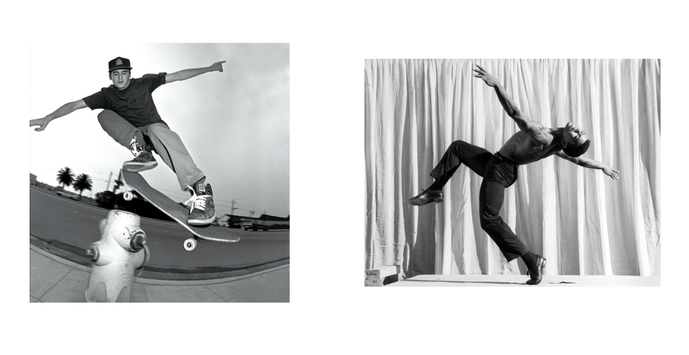
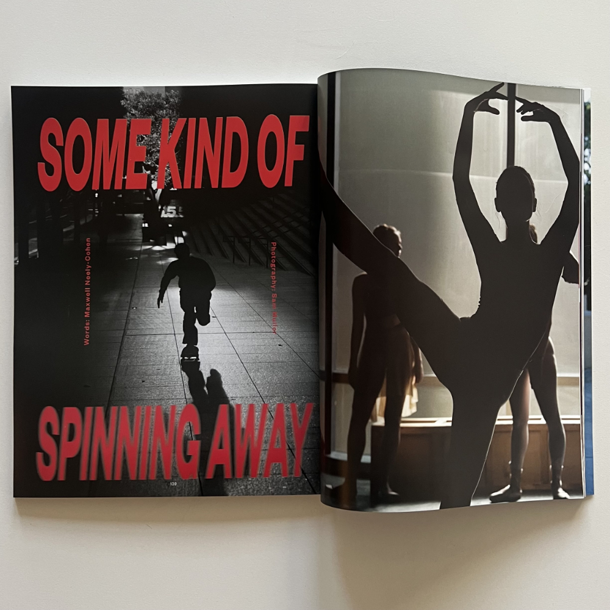
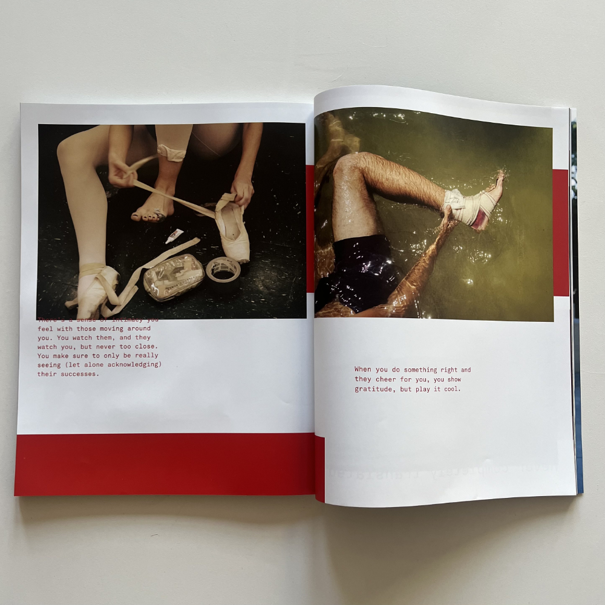

Skateboarding as a Movement Language
(An Ongoing Set of Thoughts, Talks, and Poetics Regarding
Skateboarding and Dance)

First explored as a guest lecturer at
Kyle Beachy,
Alexis Sablone, and
Tina Post's fellowship at the Gray Center for Arts and Inquiry at the University of Chicago, the initial public presentation was at the
Slow Impact 2024 conference at Arizona State University.
*You can watch a cellphone video of that talk here, and check out the slides here.*
For issue #7 of
2001 Magazine, I wrote captions to the incredible skate and dance photography of
Sam Mueller.

